Build report · 2026-06-21 · digital re-implementation (Catan Duel)
The game shipped with the Basic Set plus three theme sets (Gold, Turmoil, Innovation). This effort adds the six remaining official theme sets — the three of Age of Darkness and the three of Age of Enlightenment — sourced from the official rulebook Card Indexes and the "Included Cards" image PDFs.
6new theme sets
143new cards
144card faces cropped from the official PDFs
247cards in the game total
What was built
Done — Downloaded the 6 official source PDFs (card images + rulebooks); mapped the engine, sim/AI, data and UI architecture across four read-only surveys.
Done — Built a PyMuPDF extraction pipeline: each card is a separate embedded image, so all 216 AoD+AoE faces were cropped in reading order.
Done — Transcribed every card face with a 19-agent read-only vision pass (names + costs reliable; points/rules cross-checked against the rulebook).
Done — Wired all six new set ids through the type system, lobby selectors, deck labels, music, win thresholds and felt themes (Barbarians plays to 13 VP).
Done — Generated 143 card entries and copied 144 cropped faces into the game art pipeline; verified live that selecting a theme deals its real cards with art.
Next — Per-card rulebook polish; bespoke mechanic UIs (owl/star/sail/cannon icons, Triumph / Manifesto / Public-Feeling tracks, foreign cards, metropolis, the 3×3 sea board); AI-opponent support for the new themes.
Each card’s cropped face is the source of truth at the table — it shows the official printed rules, costs and point icons — so the themes are playable now in trust-based hot-seat, with the JSON rules text as a best-effort functional summary pending polish.
Era of Intrigue
Age of Darkness · 2011
Clash of Christian & Odinist faiths — Religious Dispute, foreign cards, build the Great Thingstead to end the conflict.
21 unique cards · 28 total
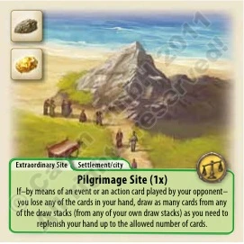
Pilgrimage Sitebuilding
1B1W
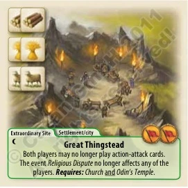
Great Thingsteadbuilding
1B1G1O
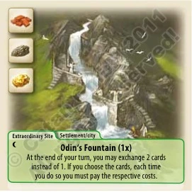
Odin's Fountainbuilding
1B1G1G
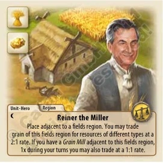
Reiner the Millerhero-or-unit
1G1Gcom 1
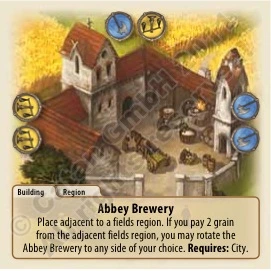
Abbey Brewerybuilding
1B1Gcom 2
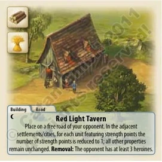
Red Light Tavernbuilding
1B1Gstr 1
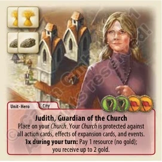
Judith, Guardian of the Churchhero-or-unit
2G1Bcom 1
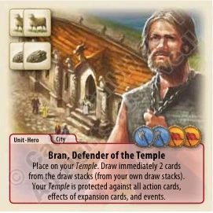
Bran, Defender of the Templehero-or-unit
1L1Bcom 1
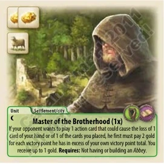
Master of the Brotherhoodhero-or-unit
2G1Ostr 1
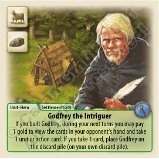
Godfrey the Intriguerhero-or-unit
1B1Oski 1
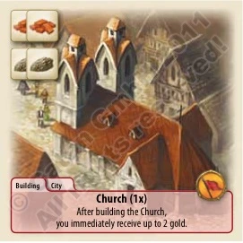
Churchbuilding · 2×
2B1G
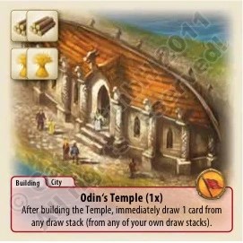
Odin's Templebuilding · 2×
2B1G
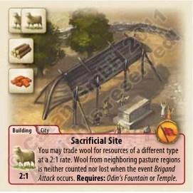
Sacrificial Sitebuilding
1W1B1G
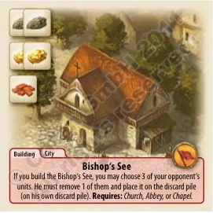
Bishop's Seebuilding · 2×
2O2G1B
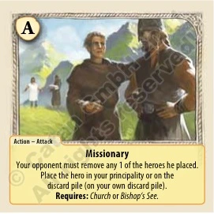
Missionaryaction
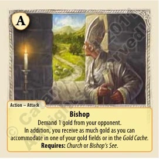
Bishopaction · 2×
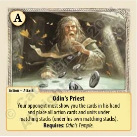
Odin's Priestaction
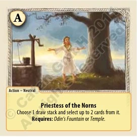
Priestess of the Hornsaction · 2×
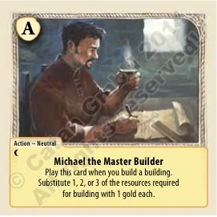
Michael the Master Builderaction
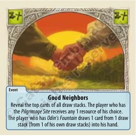
Good Neighborsevent · 2×
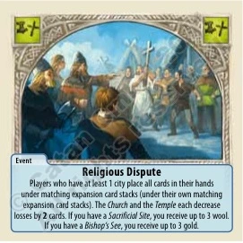
Religious Disputeevent · 2×
Era of Merchant Princes
Age of Darkness · 2011
Trade dominance via Commercial Harbour, rotatable Residences and the Commercial Metropolis.
24 unique cards · 31 total
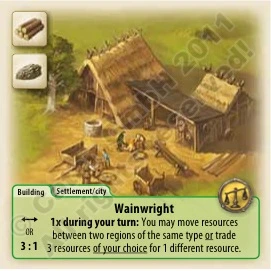
Wainwrightbuilding
1L1Bcom 1
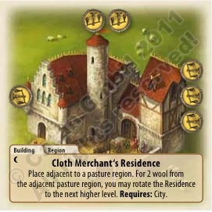
Cloth Merchant's Residencebuilding
2Gcom 2
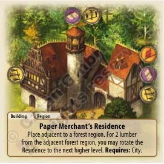
Paper Merchant's Residencebuilding
2Gcom 2
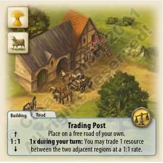
Trading Postbuilding · 2×
1L1Bcom 1
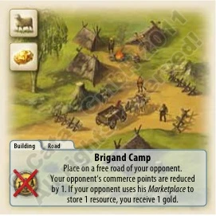
Brigand Campbuilding
1L1B
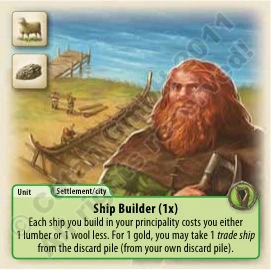
Ship Builderhero-or-unit
1L1W
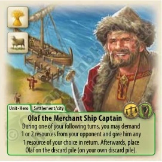
Olaf the Merchant Ship Captainhero-or-unit
1G2O
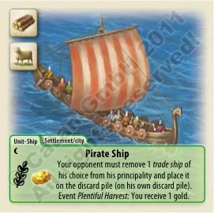
Pirate Shiphero-or-unit
1W1G1O
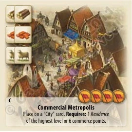
Commercial Metropolisbuilding
2B2O
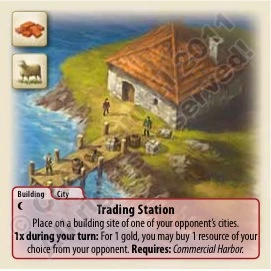
Trading Stationbuilding
1B1Gcom 1
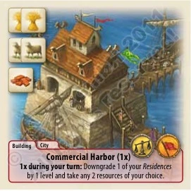
Commercial Harborbuilding · 3×
2G1B1Ocom 1str 1
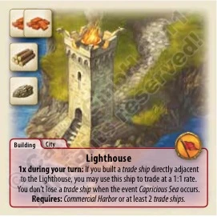
Lighthousebuilding · 2×
2B1L1Ostr 1
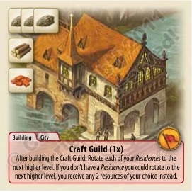
Craft Guildbuilding · 2×
1L1B1W
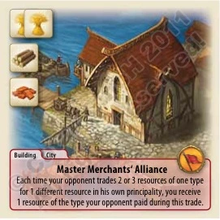
Master Merchants' Alliancebuilding
1L1B1Wvic 2
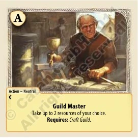
Guild Masteraction
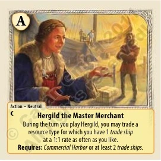
Herold the Master Merchantaction
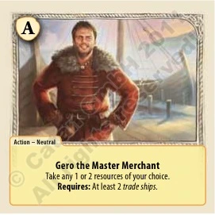
Gero the Master Merchantaction
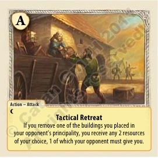
Tactical Retreataction
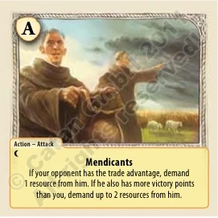
Mendicantsaction
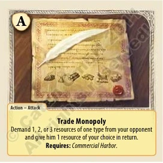
Trade Monopolyaction
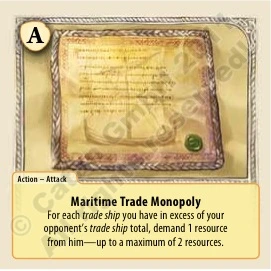
Maritime Trade Monopolyaction · 2×
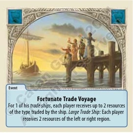
Fortunate Trade Voyageevent · 2×
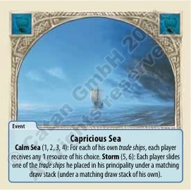
Capricious Seaevent
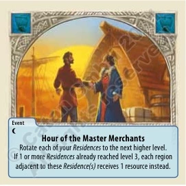
Hour of the Master Merchantsevent
Era of Barbarians
Age of Darkness · 2011
Barbarian invasions, mustered units, Castles & the Triumph track. Played to 13 VP.
21 unique cards · 34 total
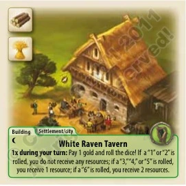
White Raven Tavernbuilding
1L1Bski 2
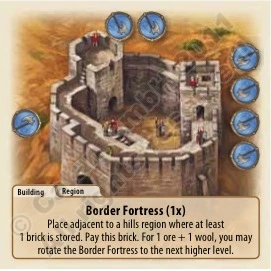
Border Fortressbuilding · 2×
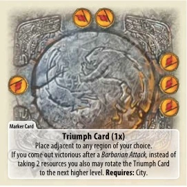
Triumph Cardbuilding · 3×
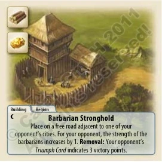
Barbarian Strongholdbuilding
1L1B
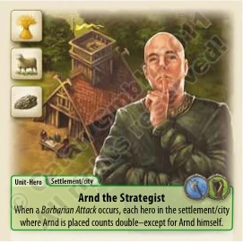
Arad the Strategisthero-or-unit
1Gski 1
Baroc the Barbarianhero-or-unit
1G
Siward the Scouthero-or-unit
1Gski 1
Wolfgang the Street Performerhero-or-unit
2Gski 1
Caravelbuilding
1L1B
Marie the Shieldmaidenhero-or-unit
1B1O
Secret Brotherhoodbuilding · 2×
1L1G
Bailwickbuilding · 2×
1L1B
Castlebuilding · 3×
2B1O
Arsenalbuilding · 2×
2B1O
Siegfried, Vanquisher of the BarbariansactionAlliance Against the Barbariansaction · 2×Castellanaction · 2×RelocationactionContest of the Heroesaction · 2×Barbarian Attackevent · 3×Retreat of the Barbariansevent
Era of Explorers
Age of Enlightenment · 2012
A 3×3 sea grid explored by ships — islands, pirates, sail & cannon points, the Explorer Metropolis.
23 unique cards · 41 total
Shipwreckbuilding · 2×Island of the BardsbuildingIsland of the MerchantsbuildingIslands of the ScholarsbuildingZheng Hehero-or-unit
1G1Gstr 5
Cinmaronehero-or-unit
1G1Gstr 6
Jeanhero-or-unit
2G1Gstr 8
Island of the Forgotten TribebuildingExplorer HarborbuildingExplorer Metropolisbuilding · 2×
Sages generate wisdom (owls) to sway events, improve draws and fend off famine.
28 unique cards · 41 total
Grove of Freedombuilding
1L1Gvic 1
Grove of Fraternitybuilding
1L1Gvic 1
Grove of Justicebuilding
1B1Ovic 2
Grove of PeacebuildingGrove of VigilancebuildingGrove of Great ForesightbuildingGrove of CouragebuildingManifest of Humane Conductbuilding · 3×
1L2G3W
Peter, Sage of the Foresthero-or-unitMichaela, Sage of the Pasturehero-or-unitBarbara, Sage of the Fieldshero-or-unitFrederich, Sage of the Hillshero-or-unitPiet, Sage of the Mountainshero-or-unitWalther, Sage of the Gold Fieldhero-or-unitPrincipal Sage Womanhero-or-unit · 2×Robert, Herald of the Sageshero-or-unit
1G1O
Cole, Paladin of the Sageshero-or-unit
1G1O
Granarybuilding · 2×
2B1W1G1Ovic 1
Academy of Sagesbuilding · 2×
2B1W1Gvic 1
Courthousebuilding · 2×
2B1W1Ovic 1
Great Foresightaction · 2×
1G
Dispute of the Sagesaction · 2×
1G
Wise Compensationaction · 2×
1G
Power of the Grovesaction · 2×
1G
Wise Protectionaction · 2×
1G
UnknownbuildingFamineevent · 2×Council of the Sagesevent · 2×
Era of Prosperity
Age of Enlightenment · 2012
Peaceful governance — contentment (stars), Public Feeling, the arts, and Riots.
26 unique cards · 38 total
Common LandbuildingVillage Schoolbuilding · 2×
1L1G
Traveling Theaterhero-or-unit
1G1W
Mercenarieshero-or-unit
1W1Ostr 1
Small Market Townbuilding
1Gcom 1
Public Feelingbuilding · 2×Thieves' Hideoutbuilding
1L1B1O
Princehero-or-unit · 2×
1G1W1Ovic 1
Princesshero-or-unit · 2×
1G1W1Ovic 1
Aqueductbuilding · 2×
2B2O
Hospitalbuilding · 2×
2L1O
Theaterbuilding
2L1B
Monument to the Princebuilding · 2×
2G1B
City Palacebuilding
2B1O
Builder's Hutbuilding · 3×
2B1Oski 1
Feeding the Pooraction · 2×Artwork: Sculptureaction